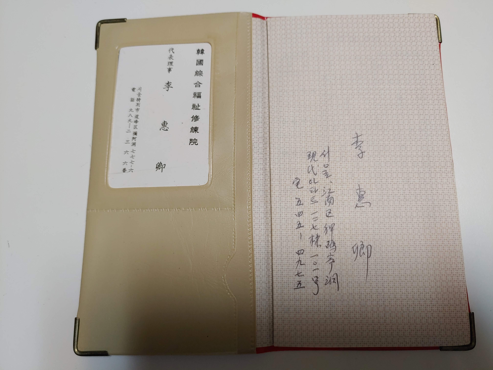

동아일보에 남남북녀 대표로 취재되다.
 어머니 석사학위날 아버지도 박사학위가운을 걸치고 기념하셨다.
덕수궁석조전
궁중요리 강연 (일본)
학창시절 (경성사범), 석사학위수여
어머니 석사학위날 아버지도 박사학위가운을 걸치고 기념하셨다.
덕수궁석조전
궁중요리 강연 (일본)
학창시절 (경성사범), 석사학위수여

 어느분 이신지...
어머니는 함북 온성 출신이고 아버지의 나남중 동창생 이규용(재미의사)의 동생, 이덕용(서울대 소아병원장, 보훈병원장)의 고모이다. 서울유학하여 경성사범 졸업, 숙명여대 가사과, 동 대학원 졸업... (당시 경성사범은 천하의 수재들이 모이는 최고의 학교로서 교직자배출과정). 어머니의 특기는 기억력이라 할만 하다. 아버지가 누구누구 전화번호가 뭐더라 어머니는 즉시 527-3339 답하듯 수백개의 전화번호가 즉시 튀어나왔다.. 어머니는 미주알고주알 아버지 일들을 챙기셨다.
숙대 석사학위증
어느분 이신지...
어머니는 함북 온성 출신이고 아버지의 나남중 동창생 이규용(재미의사)의 동생, 이덕용(서울대 소아병원장, 보훈병원장)의 고모이다. 서울유학하여 경성사범 졸업, 숙명여대 가사과, 동 대학원 졸업... (당시 경성사범은 천하의 수재들이 모이는 최고의 학교로서 교직자배출과정). 어머니의 특기는 기억력이라 할만 하다. 아버지가 누구누구 전화번호가 뭐더라 어머니는 즉시 527-3339 답하듯 수백개의 전화번호가 즉시 튀어나왔다.. 어머니는 미주알고주알 아버지 일들을 챙기셨다.
숙대 석사학위증
 석사학위 논문
어머니 강의노트 (아버지 지원의 증거)
석사학위 논문
어머니 강의노트 (아버지 지원의 증거)

권사임직
외할아버지 유일한 사진. 명륜동시절 두번쯤 뵈었던 기억이다. 이덕용(서울의대교수, 보훈병원장)의 친할아버지, 이규린(약수동)의 아버지, 이완용의 친할아버지, 이규용(을지로->재미 의사)의 아버지, 이장주(유진박 母), 이찬주, 이원용의 친할아버지....

한국종합복지수련원 대표이사 ...
 창암서원 아버지 동상을 바라보시며... (2021년 여름)
창암서원 아버지 동상을 바라보시며... (2021년 여름)